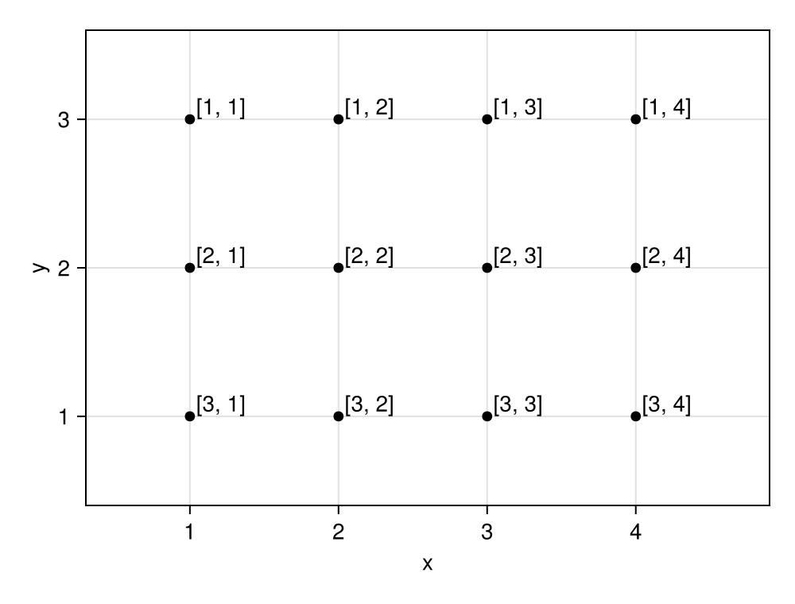
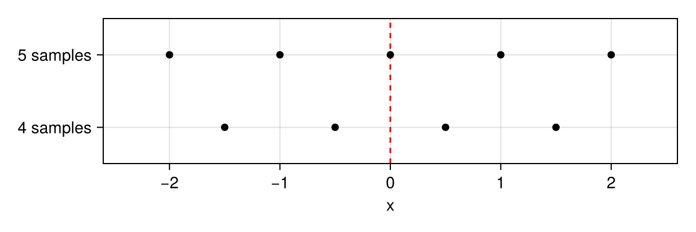
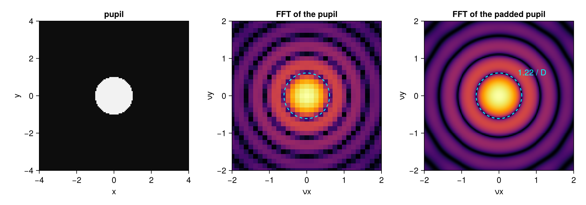
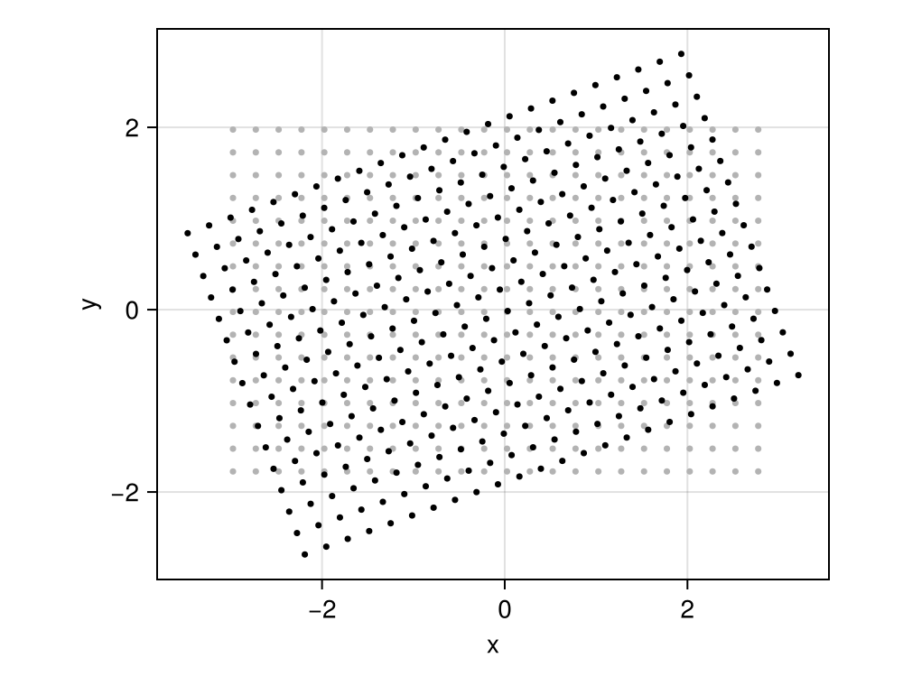
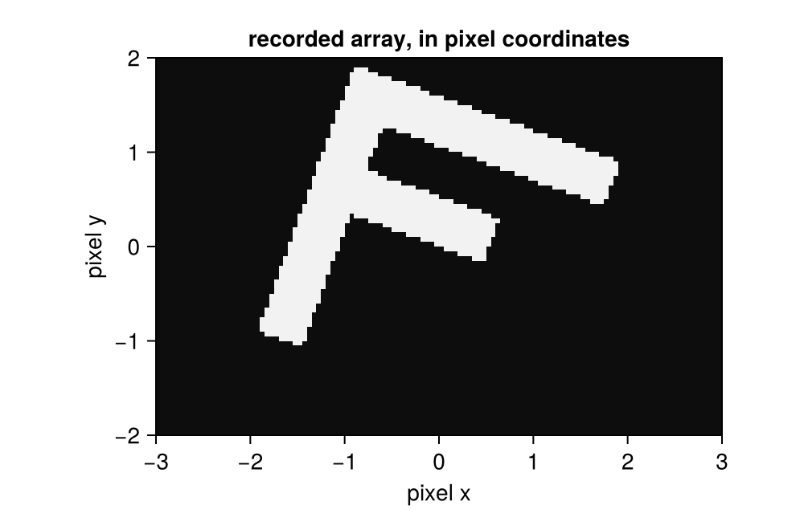

using SampledDomains
using CairoMakie
using FFTW
using CoordinateTransformations, StaticArrays
CairoMakie.activate!(; type="png")Grids
This page shows the kinds of grids of SampledDomains: a grid from two ranges, a grid centred on zero, the grid of spatial frequencies of an FFT, and a rotated grid.
The points of a grid
A CartesianDomain2D is built from a range in x and a range in y, taken as given. It is an array of points, and each point is labelled here by its index [j, i]. With a descending yrange the grid is oriented as an image, row 1 at the top, as the grids made by imagedomain:
dom = CartesianDomain2D(1:4, 3:-1:1)3×4 CartesianDomain2D{Int64} with points (x, y):
x: 1:4
y: 3:-1:1fig = Figure(; size=(500, 380))
ax = Axis(fig[1, 1]; xlabel="x", ylabel="y", aspect=DataAspect(),
limits=(0.3, 4.9, 0.4, 3.6))
scatter!(ax, Point2f.(vec(dom)); color=:black)
for I in CartesianIndices(dom)
p = dom[I]
text!(ax, p.x, p.y; text=" [$(I[1]), $(I[2])]", align=(:left, :bottom), fontsize=14)
end
fig
Everything that works for arrays works for a domain: map, broadcasting, iteration, CartesianIndices. Multiplying a domain by a number scales its coordinates (and drops the units, see Origins and units).
Grids centred on zero
make_centered_domain2D(nx, ny, step) puts zero in the middle of the grid. With an odd number of samples zero is a sample; with an even number it lies between the two middle samples.
odd = make_centered_domain2D(5, 1, 1.0)
even = make_centered_domain2D(4, 1, 1.0)
odd.xrange, even.xrange(-2.0:1.0:2.0, -1.5:1.0:1.5)fig = Figure(; size=(600, 200))
ax = Axis(fig[1, 1]; xlabel="x", yticks=([1, 2], ["4 samples", "5 samples"]),
limits=(-2.6, 2.6, 0.5, 2.5))
vlines!(ax, [0]; color=:red, linestyle=:dash)
scatter!(ax, collect(even.xrange), fill(1, 4); color=:black)
scatter!(ax, collect(odd.xrange), fill(2, 5); color=:black)
fig
The grid of spatial frequencies
The discrete Fourier transform of an array of n samples with step Δx gives the spatial frequencies with step 1 / (n Δx), from -1 / (2Δx) to 1 / (2Δx). dualDomain returns this grid in the order of fftshift. As a check, we take a circular pupil of diameter D = 2 and compute its far-field intensity: its first dark ring must be at the frequency 1.22 / D.
pupil = make_centered_domain2D(128, 128, 1 / 16) # 8 × 8 units, step 1/16
ap = map(p -> hypot(p.x, p.y) <= 1, pupil) # D = 2
farfield = abs2.(fftshift(fft(ifftshift(ap))))
fdom = dualDomain(pupil)
step(fdom.xrange), extrema(fdom.xrange)(0.125, (-8.0, 7.875))The frequency step 1/8 is coarse for a ring at 0.61. To make it finer, the pupil is padded with zeros: the padded array covers a four times larger domain with the same step, and the grid of its FFT is the dual of that larger domain. The pupil is placed so that its centre stays at the centre of the padded array.
q = 4
padded = zeros(q .* size(ap))
offset = (q .* size(ap)) .÷ 2 .- size(ap) .÷ 2
padded[offset[1] .+ (1:size(ap, 1)), offset[2] .+ (1:size(ap, 2))] .= ap
farfield_padded = abs2.(fftshift(fft(ifftshift(padded))))
fdom_padded = dualDomain(make_centered_domain2D(q * 128, q * 128, 1 / 16))
step(fdom_padded.xrange), extrema(fdom_padded.xrange)(0.03125, (-8.0, 7.96875))logscale(I) = log10.(I .+ 1e-4maximum(I))
fig = Figure(; size=(1000, 350))
ax1 = Axis(fig[1, 1]; title="pupil", xlabel="x", ylabel="y", aspect=DataAspect())
heatmap!(ax1, pupil, ap; colormap=:grays)
ax2 = Axis(fig[1, 2]; title="FFT of the pupil", xlabel="νx", ylabel="νy",
aspect=DataAspect(), limits=(-2, 2, -2, 2))
heatmap!(ax2, fdom, logscale(farfield); colormap=:inferno)
ax3 = Axis(fig[1, 3]; title="FFT of the padded pupil", xlabel="νx", ylabel="νy",
aspect=DataAspect(), limits=(-2, 2, -2, 2))
heatmap!(ax3, fdom_padded, logscale(farfield_padded); colormap=:inferno)
for ax in (ax2, ax3)
arc!(ax, Point2f(0, 0), 1.22 / 2, 0, 2π; color=:cyan, linestyle=:dash)
end
text!(ax3, 0.5, 0.5; text="1.22 / D", color=:cyan)
fig
The far-field intensity on a logarithmic scale. The dashed circle at 1.22 / D falls on the first dark ring in both pictures, so the coordinates given by the dual grids are right. Multiplied by λ f, the same grid gives the coordinates in the focal plane of a lens with focal length f: fdom * (λ * f); the page PSF in wavelengths does this with units.
The second argument of dualDomain(dom, q) does something else than padding: it keeps the step 1 / (n Δx) and makes the range q times wider. This is the grid of the FFT of an array over the same extent sampled q times finer, with step Δx / q:
dualDomain(pupil, 2) == dualDomain(make_centered_domain2D(2 * 128, 2 * 128, 1 / 32))trueA rotated grid
A camera whose sensor is rotated with respect to the frame of the setup samples the object on a rotated grid. AffineDomain2D describes such a grid: a grid in its own frame (the pixels) and a map to the physical frame, here a rotation by 20°:
θ = deg2rad(20)
rot = LinearMap(@SMatrix [cos(θ) -sin(θ); sin(θ) cos(θ)])
pixels = make_centered_domain2D(120, 80, 0.05)
camera = AffineDomain2D(pixels, rot)80×120 AffineDomain2D{Float64} with points map(grid[j, i]):
grid: CartesianDomain2D(-2.975:0.05:2.975, 1.975:-0.05:-1.975)
map: AffineMap([0.9396926207859084 -0.3420201433256687; 0.3420201433256687 0.9396926207859084], [0.0, 0.0])The points of the camera, every fifth one, on top of the axis-aligned grid:
fig = Figure(; size=(500, 380))
ax = Axis(fig[1, 1]; xlabel="x", ylabel="y", aspect=DataAspect())
scatter!(ax, Point2f.(vec(pixels[1:5:end, 1:5:end])); color=:gray70, markersize=5)
scatter!(ax, Point2f.(vec(camera[1:5:end, 1:5:end])); color=:black, markersize=5)
fig
The camera records the values of the object at its own points. Evaluated on camera, the letter F appears in the stored array rotated by -20°: this is the picture the camera delivers.
letterF(p) =
(-1.5 <= p.x <= -1.0 && -1.5 <= p.y <= 1.5) ||
(-1.5 <= p.x <= 1.5 && 1.0 <= p.y <= 1.5) ||
(-1.5 <= p.x <= 0.5 && 0.0 <= p.y <= 0.5)
recorded = Float64.(map(letterF, camera))
fig = Figure(; size=(500, 330))
ax = Axis(fig[1, 1]; title="recorded array, in pixel coordinates", xlabel="pixel x",
ylabel="pixel y", aspect=DataAspect())
heatmap!(ax, pixels, recorded; colormap=:grays)
fig
The inverse map takes physical points back to the pixel frame: inv(camera.map), and indexof gives the fractional pixel index of a physical point:
indexof(camera, camera[10, 20])(10.000000000000004, 20.000000000000004)Values with their domain
SampledDomain keeps an array of values with its domain and checks that their sizes agree. Constructed from a function, it calls f(x, y) at every point:
s = SampledDomains.SampledDomain((x, y) -> x + 2y, dom)
s.vals3×4 Matrix{Int64}:
7 8 9 10
5 6 7 8
3 4 5 6This page was generated using Literate.jl.